Mesh Editor was an interesting dive into the world of 3D Graphics, and the underlying architecture that enables the geometric manipulations that power tools like Blender, and Maya. This project delves into both rendering Bezier curves and Bezier surfaces through a liberal application of de Casteljau's algorithm as well as manipulation of triangulated meshes, including edge flipping, edge splitting, and mesh subdivision.
In order to draw arbitrary splines, we leverage de Casteljau’s algorithm. In essence, the algorithm requires as inputs a series of control points of the curve we wish to interpolate. We will also need to define t, a quantity between 0 and 1. We will call all of these initial control points the 0th degree control points. Between each pair of adjacent control points, we draw a new intermediate control point at the location defined as the linear interpolation of the leftmost point and the rightmost point with parameter t. We repeat this process for each dual pair of adjacent 0th degree control points, to draw our 1st degree control points. Note that if we initially had n 0th degree control points, we will now have n - 1 first degree control points. We will apply this process on our first degree control points, deriving 2nd degree control points, and similarly on second degree control points and 3rd degree control points etc. until we are left with a singular (n - 1) th degree control point. This is one point on the Bezier curve defined by the 0th degree control points. Modulating t to infinitesimally small degrees allows us to project the entire curve defined by our control points.
The implementation was a direct map of the aforementioned algorithm. At each function invocation, the input vector represented our ith degree control points. Between each adjacent pair in this vector, I simply linearly interpolated the points with curve parameter t, pushing these new points to a collection vector, and returning the collection vector at the end, which represented the (i + 1) degree control points.
|
|
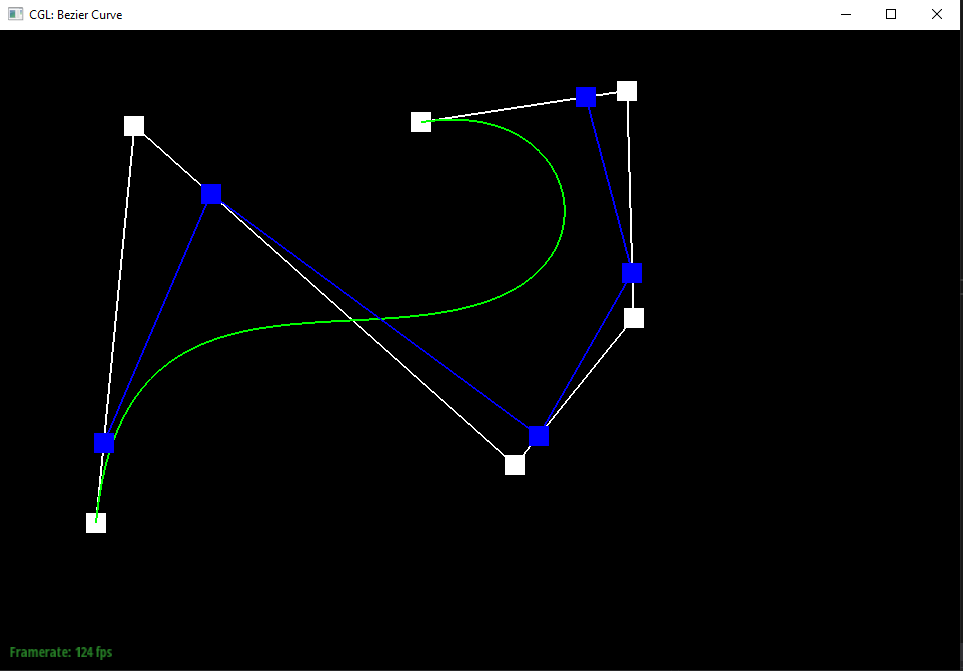
|
|
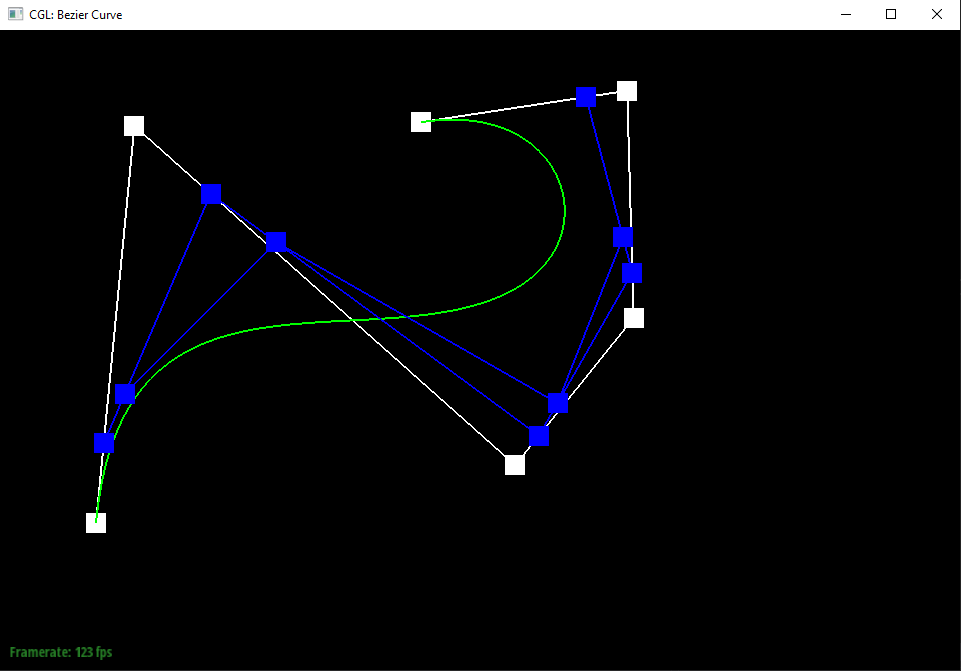
|
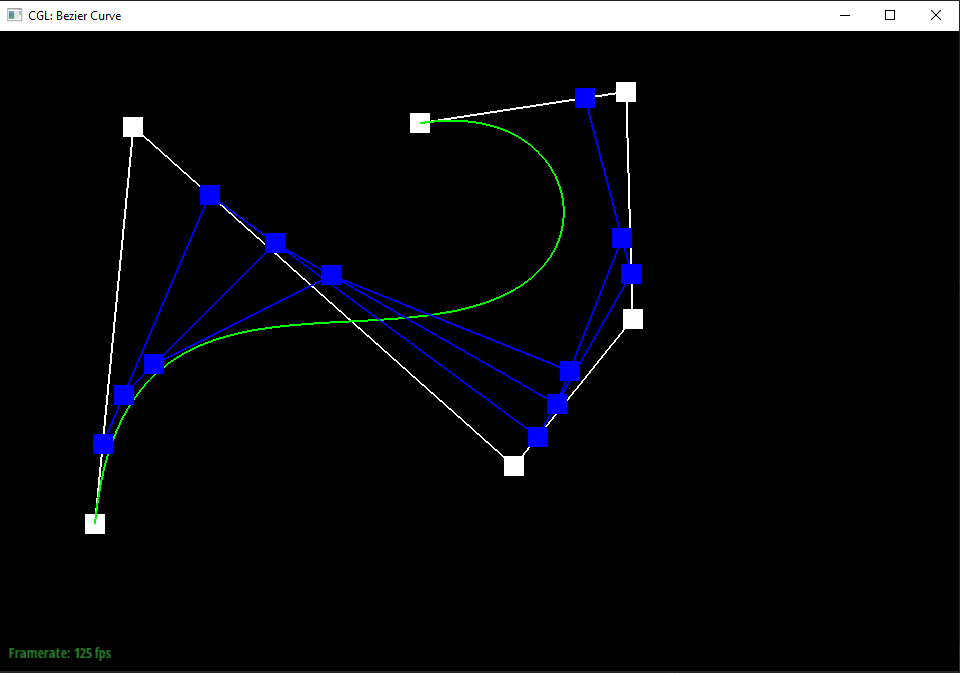
|
|
|
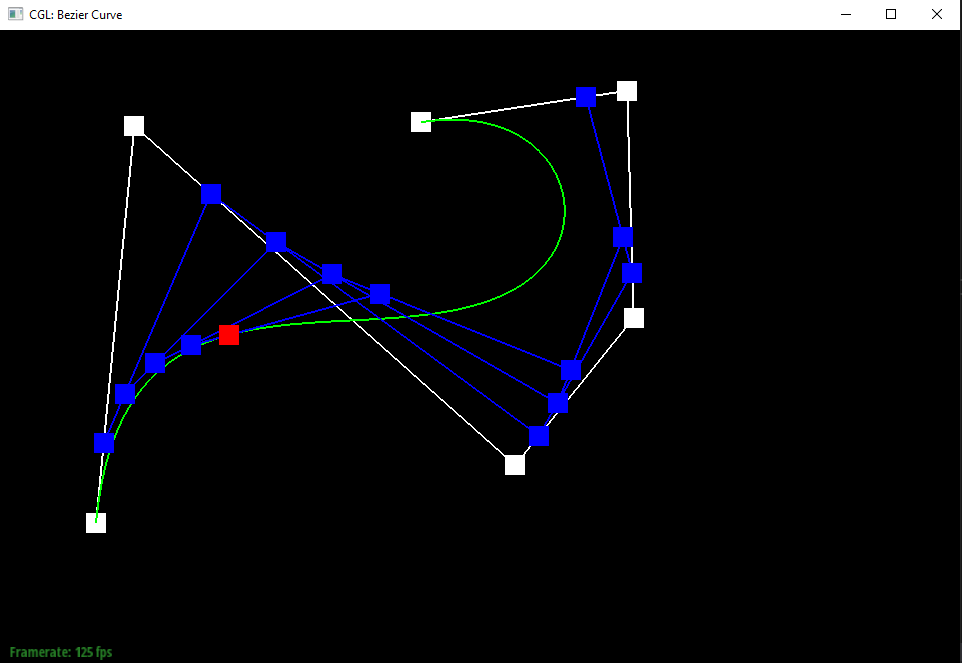
|
We can drag the control points around to see how they will modulate the underlying Bezier curve. Scrolling allows us to alter the linear interpolation parameter t, which helps to visualize the entire Bezier curve.
|
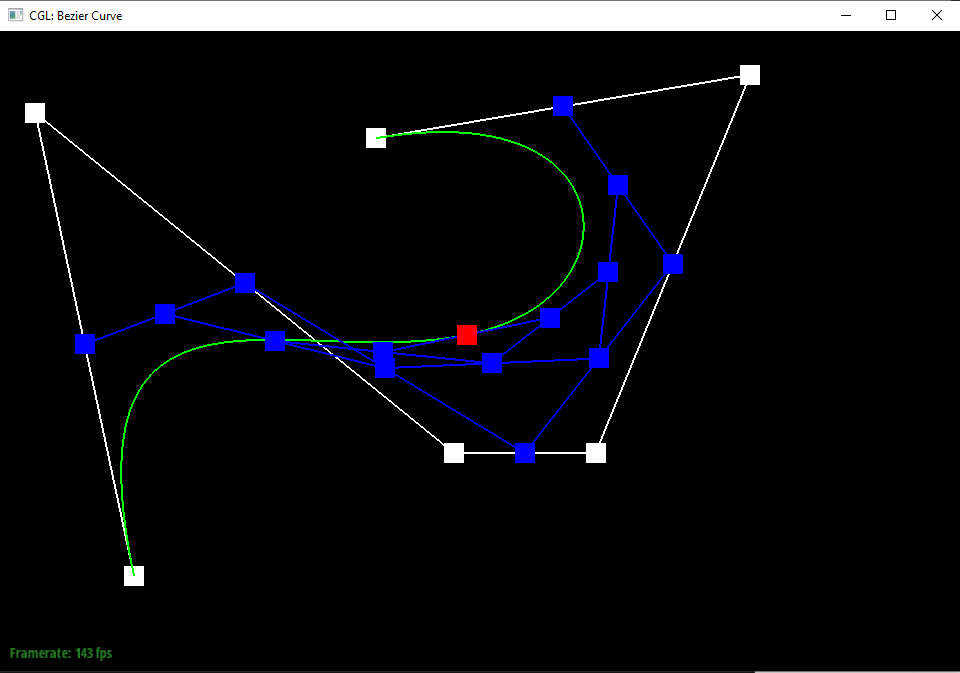
|
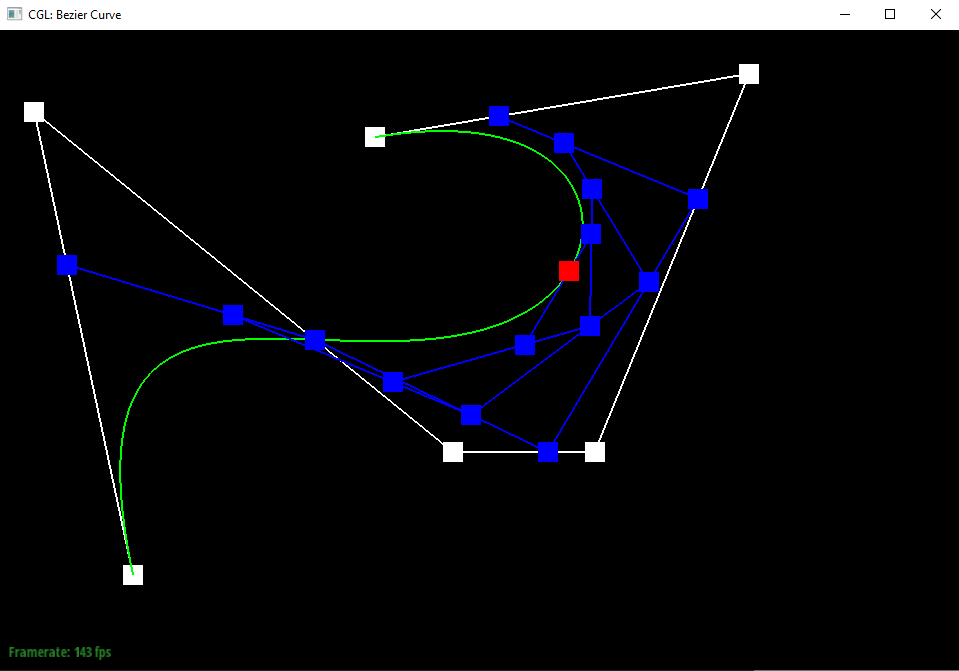
|
The extension from rendering Bezier curves to rendering Bezier surfaces is actually more straightforward than I expected. We can leverage separable 1-dimensional de Casteljau’s algorithm to interpolate point (u, v) on our Bezier patch. If we have m rows of original control points, each with n control points (m x n) control points total, we treat each row of n control points as the initial control points to a Bezier curve, and thus we can use de Casteljau’s algorithm to evaluate a point on each of the m curves, given linear interpolation parameter u (as a direct mirror to task 1). This will leave us with a set of m points, which we can again treat as the original control points of a Bezier curve, allowing us to again utilize de Casteljau’s algorithm to interpolate a point on this curve given linear interpolation parameter v. Thus we are left with a single point on our Bezier patch, which was evaluated at (u, v).
Much like in task 1, the substance of the problem centers around evaluating de Casteljau’s algorithm. In part 1, we wrote a function
(evaluateStep) that took as input a vector of control points and a linear interpolation parameter, and returned a vector of
control points that corresponded to the subsequent stage of de Casteljau’s algorithm. For this part, we first write a function that
will evaluateStep on a vector with argument u, and evaluateStep on the return to evaluateStep
perpetually, until we interpolate our singular point on the Bezier curve; we can call this function evaluate1D. Thus, appealing
to our algorithm described above, we need only call evaluate1D with parameter u on all of our rows of control points,
each stored as a vector in the Bezier patch, pushing the resulting interpolated points into another vector, on which we will again call
evaluate1D with parameter v to interpolate the actual point on our Bezier patch.
Thankfully, the half-edge mesh makes computing area-weighted vertex normals quite elegant. The following pseudocode gives the outline:
Initialize a tracker for total area (TA), and total vector sum (TVS)
For each vertex:
- Query the initial half-edge rooted at this vertex (h = v->halfedge()).
- Retrieve h’s face, and query the face’s normal vector (face_norm = h->face()->norm()).
- Compute the area of the face.
- Add area to TA
- Add area * face_norm to TVS
- Repeat steps 1-5 for all adjacent faces to the given vertex
To find all adjacent faces of a vertex given our initial vertex v and halfedge h, we can get the half-edge of
the next face by finding h->twin()->next()h.
We can calculate the area of a triangulated face given one vertex on the face by calling on the following routine (please see the accompanying diagram for clarity):
Then all we need to do is return TVS / TA.
|
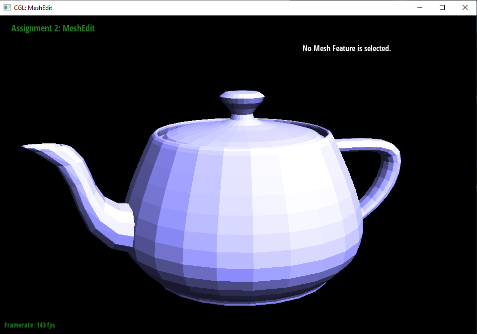
|
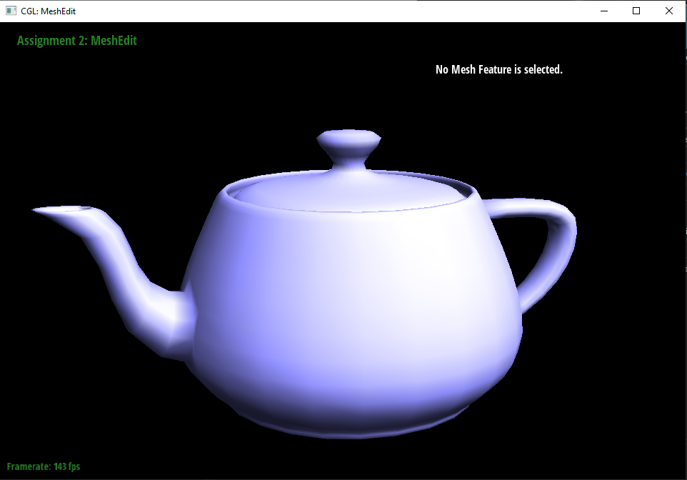
|
To implement edge flips, I followed the guidelines specified by this helpful link from the folks at CMU. The essence of this guide is as follows. First we save a pointer (in the form of an Iterator) for each of the half edges, vertices, edges, and faces from our starter mesh. Next, since edge flips do not utilize new elements, we can simply assign our elements such that our central edge flips the vertices from which it is rooted, and thus all corresponding vertices, edges, faces, and halfedge pointers are updated as a result. As per the guide, we element assign every half edge, vertex, edge, and face regardless of whether or not edge flipping alters its starting state.
|
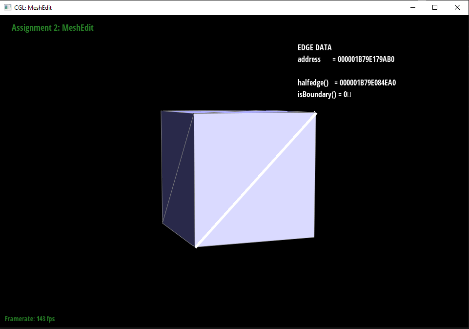
|
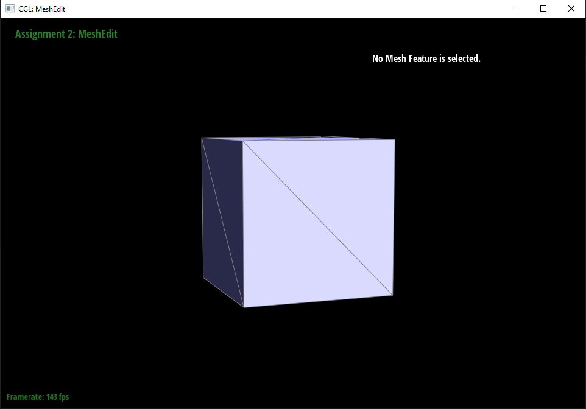
|
This process is really difficult to internalize through text, thus the provided diagram documents the procedure pictorially.
Concretely, the guide tells us to do the following. We’ll take a look at the picture on the left side, and attempt to take a freeze frame of the state of the elements (edges, faces etc.). What this means is that we’ll generate variables for each of the mesh components to start. Next we’ll check to see whether or not we ought to be generating new mesh components. It turns out for edge flips, the starter components are sufficient, so we can just pass this step for now. Now we will modify the mesh by using the variables generated above and assigning their corresponding fields based on the picture on the right side, the flipped edge side. Finally, if our mesh renovation deletes components, we’ll do that as the final step, but again with edge flips we can just skip this step.
As with task 4, the implementation of this part is quite straightforward, by following the earlier link. Simply begin by saving pointers for each of the half edges, vertices, edges, and faces. This time we will need to create 1 vertex, 3 edges, 2 faces, and 6 half-edges. Then, using the diagram I included above, I was able to sequentially assign all neighbors and attributes for every half edge, vertex, edge, and face to account for the new central vertex, and the vertices that radiate out from it. It is important to note, the new vertex generated is positioned at the midpoint of the edge it cuts.
|
|
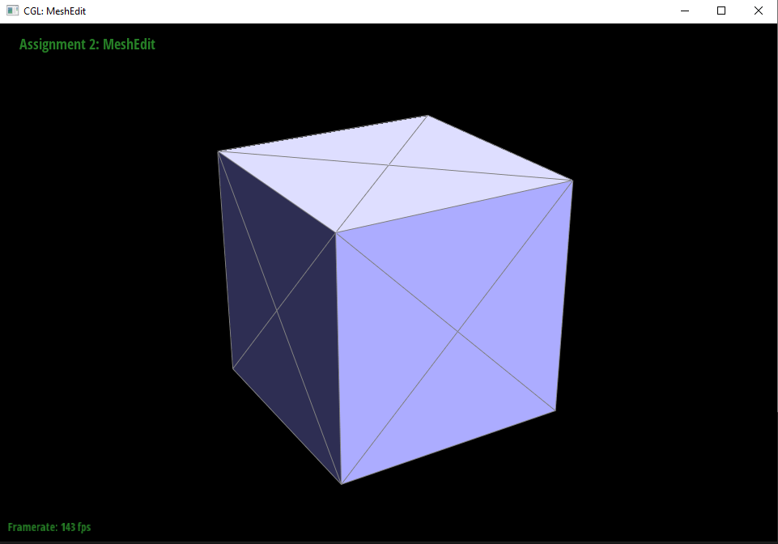
|
|
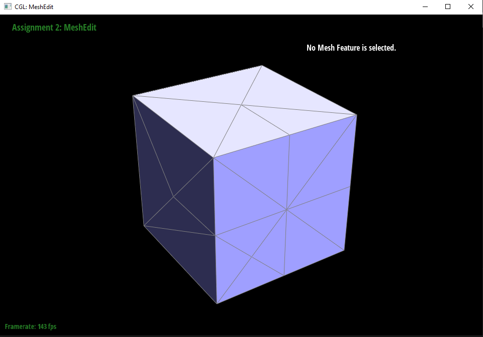
|
|
Edge splits are perhaps even more tedious to explain in text than edge flips are, so again, the diagram should elucidate the general methodology.
Again put concretely we’ll essentially use the same walkthrough as task 4. We’ll take a look at the picture on the left side, and attempt to take a freeze frame of the state of the elements (edges, faces etc.). What this means is that we’ll generate variables for each of the mesh components to start. Next we’ll check to see whether or not we ought to be generating new mesh components. For mesh splits, we will need to generate 1 vertex, 3 edges, 2 faces, and 6 halfedges (in fact, my implementation creates 1 vertex, 4 edges, 4 faces, and 8 halfedges just because the component mapping was slightly more intuitive for me that way). Now we will modify the mesh by using the variables generated above and assigning their corresponding fields based on the picture on the right side, the split edge side (an example has been done in the diagram for reference). Finally, for edge splits, we will not need to delete components, however in my implementation, we actually did delete one edge, two half edges, and 2 faces (to account for the extra components created).
|
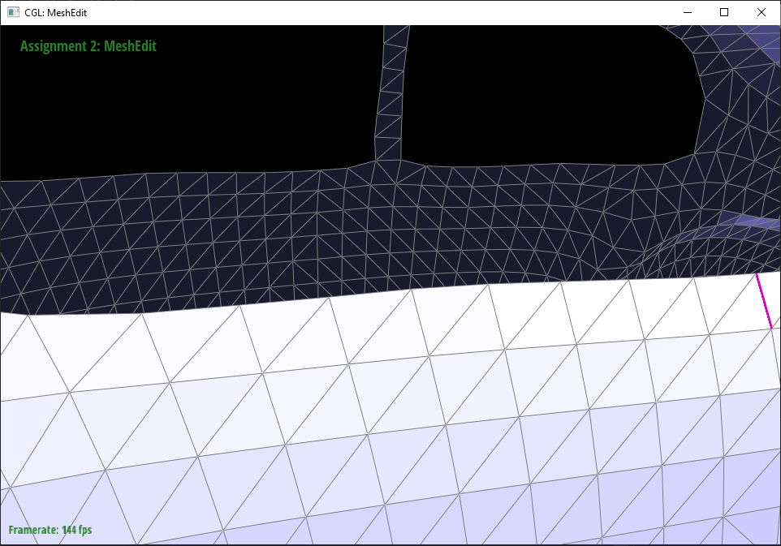
|
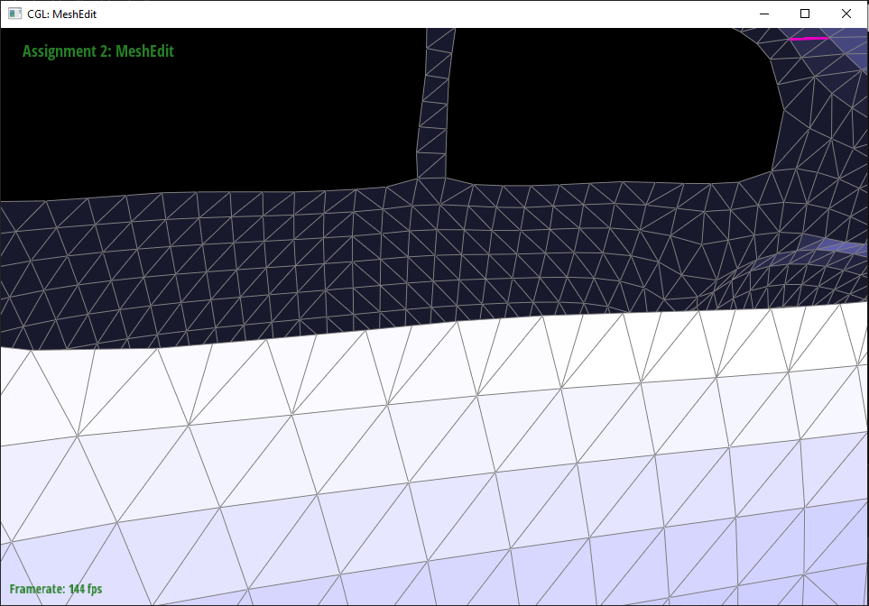
|
Note the boundary edges split correctly as well. Instead of leaving boundary edges unsplit, I simply split the boundary triangle in two, by dividing the midpoint of the boundary edge with a vertex, and assigning neighbor elements to account for the new face.
|
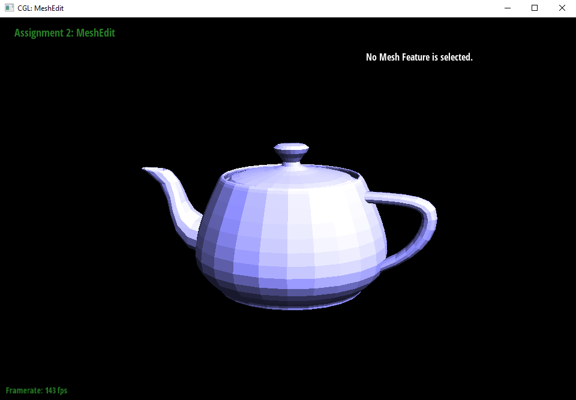
|
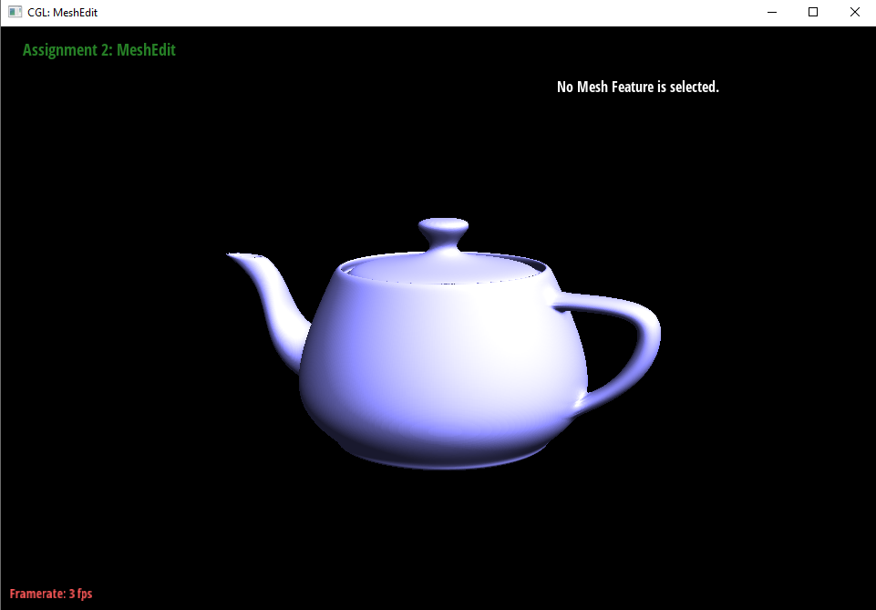
|
Loop subdivision allows for a lightweight yet efficacious mode of upsampling triangulated meshes. The first step is to calculate the new positions
for all of the vertices in our starter mesh (we’ll ignore boundary vertices at first, since this introduces a new layer of complexity). Thus,
iterating over all the vertices in our starter mesh, we employ the following scheme to redraw weights for existing vertices. First, add together
each of the positions of all neighbouring vertices of v. Then, set the newPosition field of v to be
(1 - deg(v) * u) * v->position + deg(v) * sumNeighbourPositions), where if the degree of v is 3, u is (3/16),
and otherwise, u is (3/(deg(v) * 8)). While we’re iterating through all our initial vertices, we will set
their isNew tracker flags to be false (we’ll see why later).
As we know, in loop subdivision, we will add a new vertex on every starter edge, and we will of course need to assign a position to these new
vertices as well, so we begin by iterating through all of the starter edges. For every edge, we can calculate the position of the new vertex
on that edge and summarily set the newPosition attribute of our edge to be (3/8)*(A + B) + (1/8)(C + D)
where A, B, C, and D are the positions of the vertices defined in the above diagram. Of course these
edges are all starter edges, so we will set their isNew tracker flags to be false as well. Simultaneously, we will create a
tracking array of old_edges, and push all edges we iterate over into this array.
Now, with all the mise en place complete, we can begin the actual mesh modifications. We start by splitting all of the starter edges (in old_edges)
of the mesh (see now why we tracked all the old edges?). We can leverage our splitEdge function from task 5 to do this easily, however, we will
make a tiny alteration to this function; when an edge is split, we assign the new vertex’s newPosition field to be the newPosition field of the
split edge.
The second to last step in loop subdivision is to flip every edge that links two starter vertices, so we can simply iterate through all our edges
and check, flipping edges with our edgeFlip function from task 4 as aforementioned.
Finally, all we need to do is push the updates to the vertex positions, so for all vertices, just set their position field to be
equal to their newPosition field!
For many meshes, subdivision smoothes the low-poly appearance of a model, which stands to reason. Features become more detailed as the mesh becomes more granular, and the model appears to be higher quality (see the teapot comparison above).
|
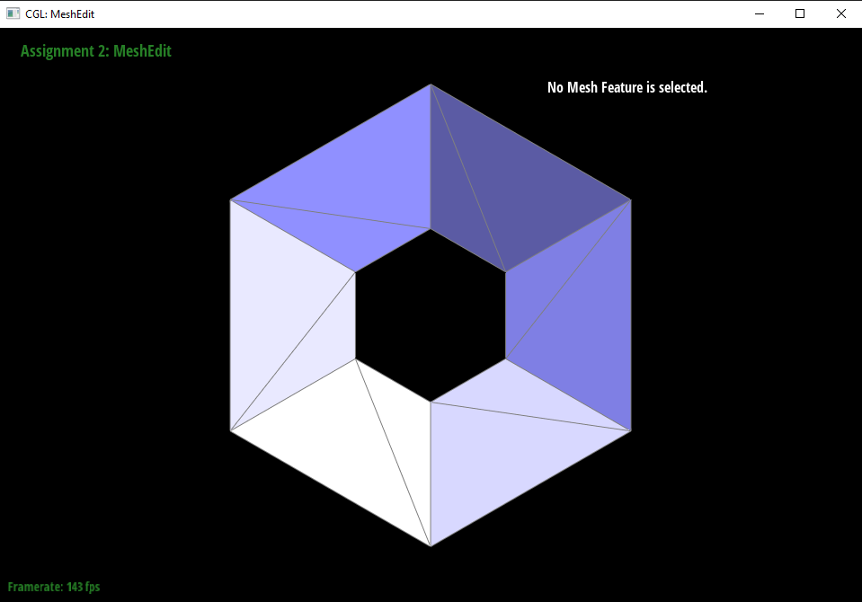
|
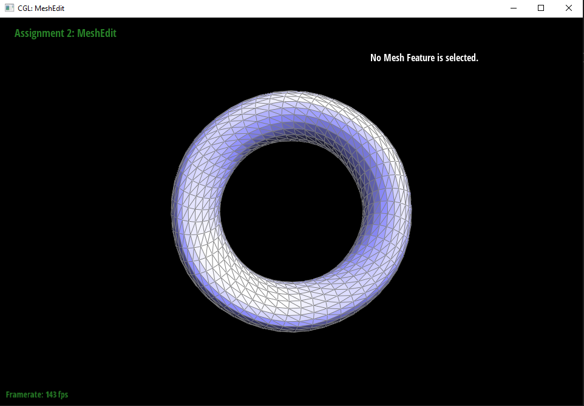
|
Unfortunately, edges and corners don’t hold up well under loop subdivision. As we subdivide the mesh, if we observe the way the loop subdivision scheme functions, essentially for positions of new vertices, we blend and smooth our mesh by taking an average position of neighboring vertices, and reweight our starter vertices similarly. As a result, sharp mesh elements, like edges and corners are dulled with successive subdivisions as they regress to the vertices neighboring them.
|
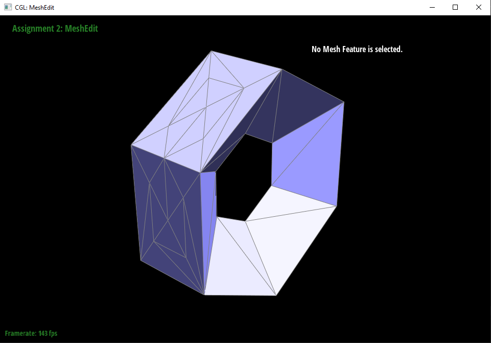
|
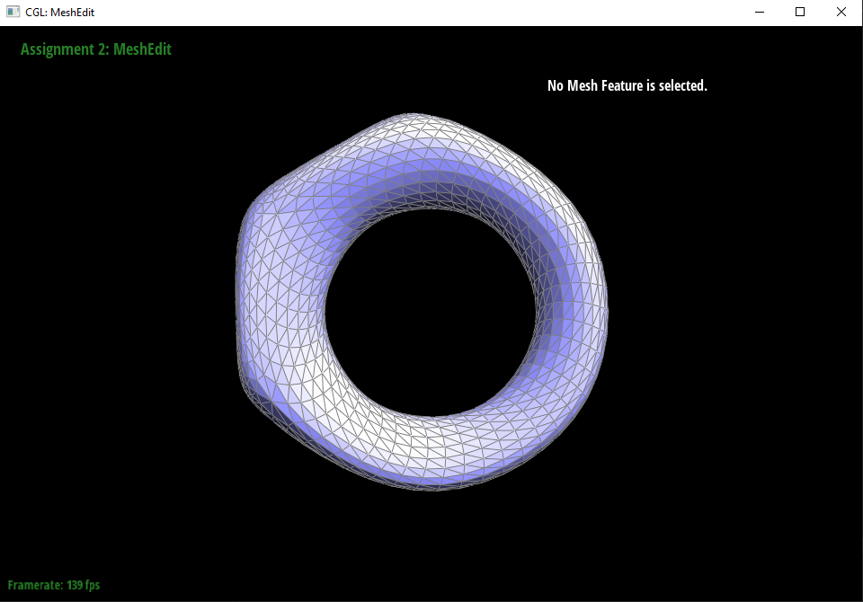
|
We can temper this effect a bit, by pre-splitting some edges, although this is far from the sharpness that would be acceptable for creasing. Observe in the torus below, we pre-split some of the edges on one side of the donut. Later when we subdivide, the general edge and corner shape is apparent, considerably more so than without preprocessing.
|
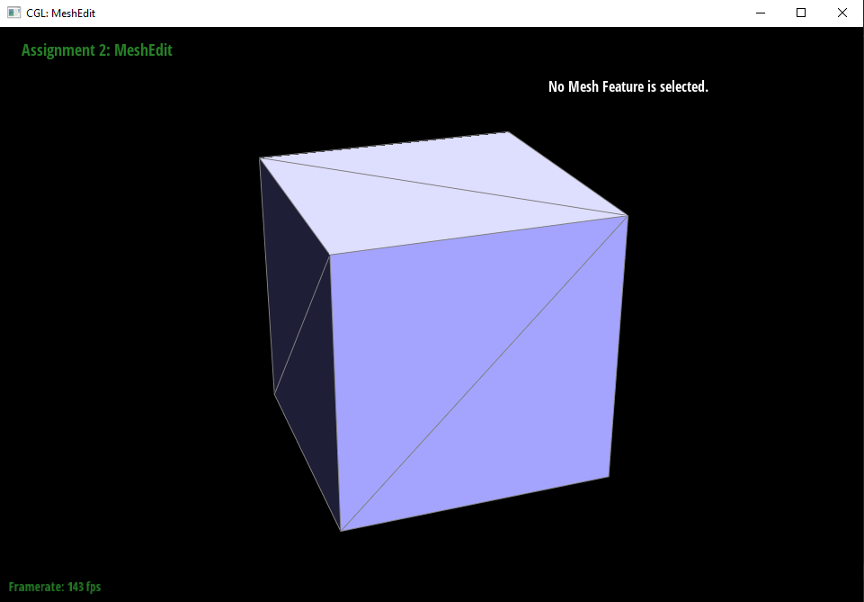
|
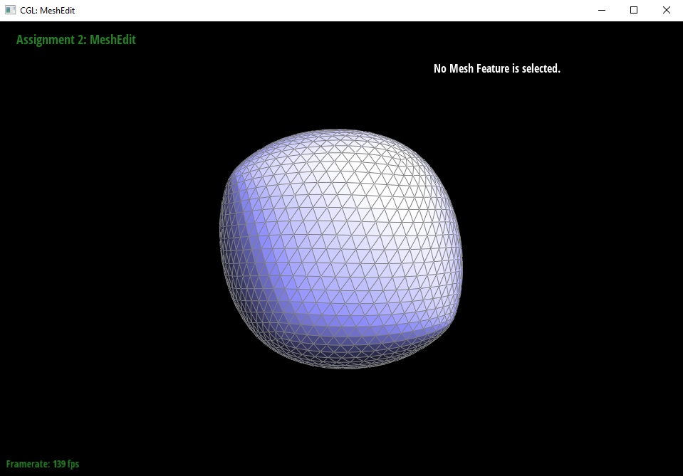
|
The issue that causes the weird asymmetry when subdividing the cube is actually an underlying artifact of the mesh’s triangulation. Notice that the underlying geometry triangulation splits each face along only one diagonal? The effect of this is that when the triangles are subdivided, all new triangles will be oriented exactly as the starter triangles were.
|
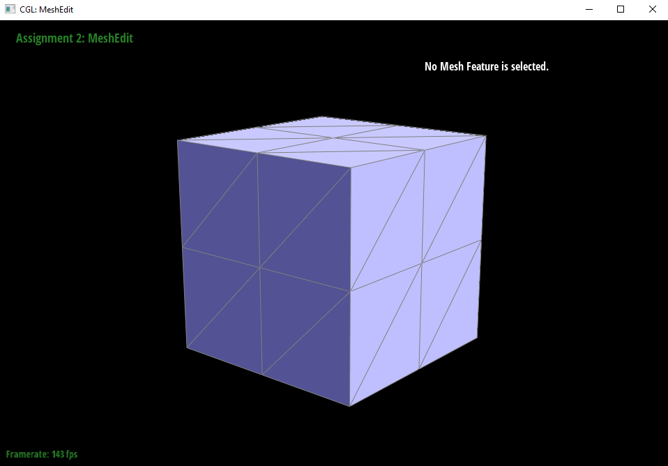
|
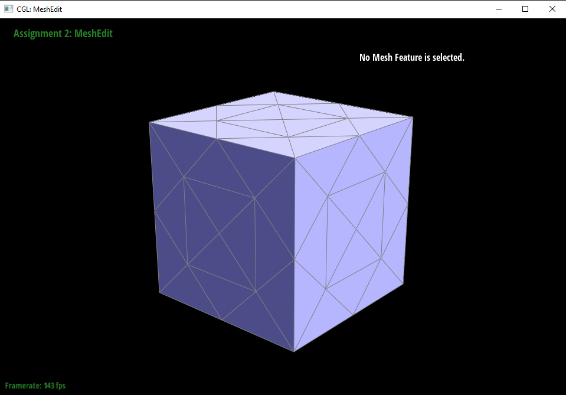
|
The intuition becomes starkly apparent when we compare the subdivision right before the reweighting of our asymmetric triangulation and our symmetric triangulation. New point positions will be calculated (and starter vertex positions will be reweighted) according to a linear combination of neighbor vertex positions. Intuitively, if the triangulation of our mesh leaves vertices only in one orientation, linear combinations of the vertices will necessarily mirror this orientation. Put another way, asymmetry in the initial triangulation will lead to asymmetry in the first subdivision, which in turn leads to asymmetry in the second subdivision ad infinitum.
|
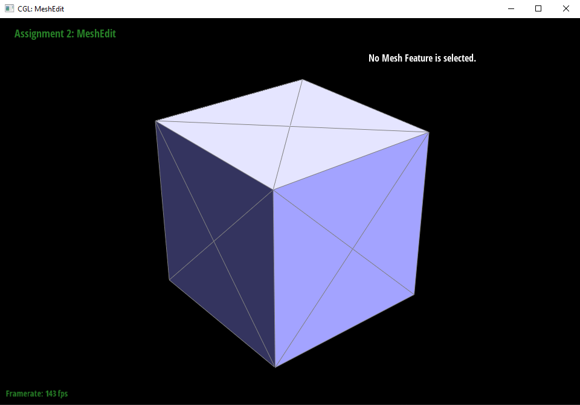
|
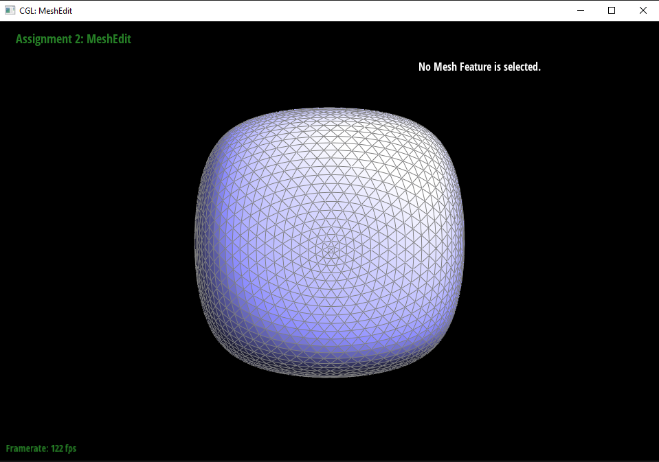
|
We can fix this issue by splitting every diagonal edge first, thereby imposing a symmetric distribution of vertices. Essentially now, since the initial triangulation is symmetric, any additional vertices will be symmetrically added, and symmetrically reweighted as well.
Boundaries are weird. Supposedly I should be able to iterate through all starter vertices, and if I find a boundary vertex, I need to reweight this vertex such that it has position: (1/8) * A + (3/4) * B + (1/8) * C. Then for all boundary edges, I simply need to put a vertex such that it cuts the original edge at the center. Did this work?
|
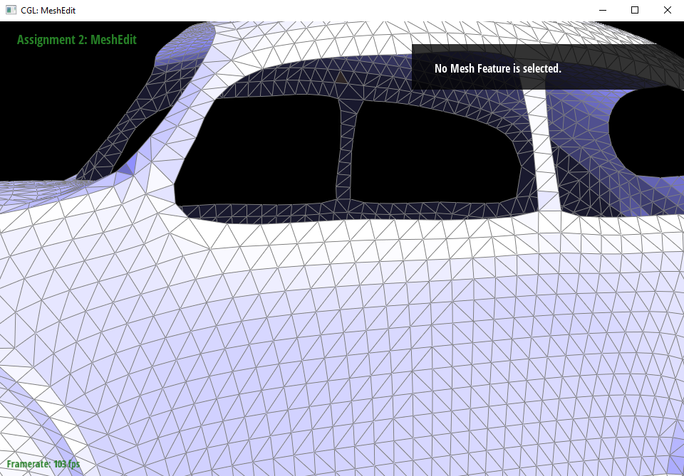
|
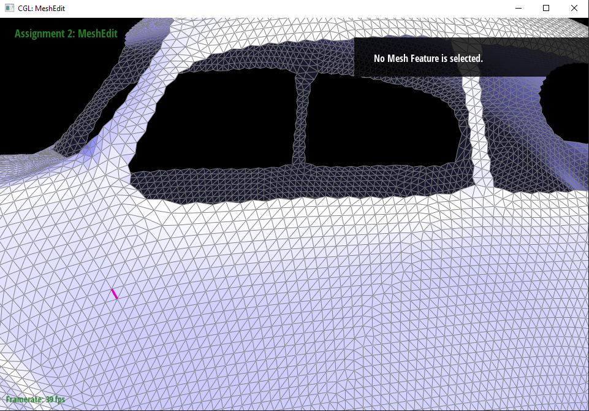
|
Kind of... we can see that this new scheme certainly doesn’t ignore boundary elements, but it looks a little odd. There seems to be noise in the mesh. The fact that the subdivision occurs correctly however, the positions of new boundary triangles are just a little off leads me to believe that I am misinterpreting some part. I think I may be misunderstanding the weighting system, but of the numerous articles I consulted to figure this part out, they all point to this same weighting scheme. On the bright side, at least it doesn’t crash upsampling the Beetle car.
|
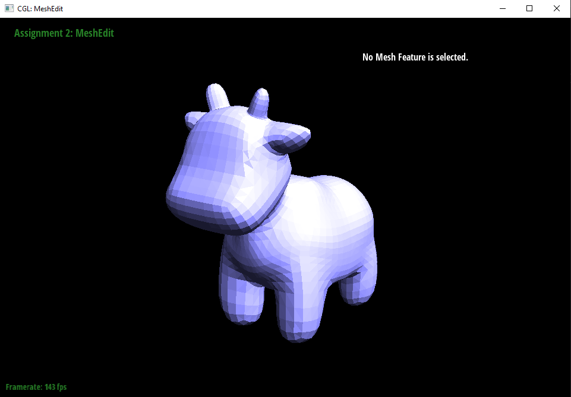
|
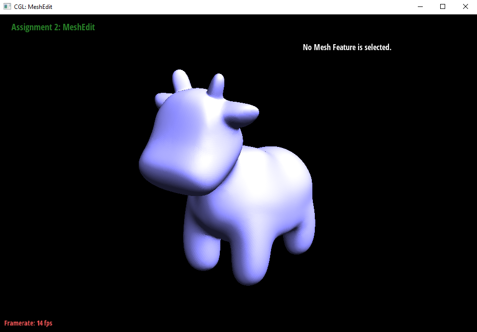
|
|
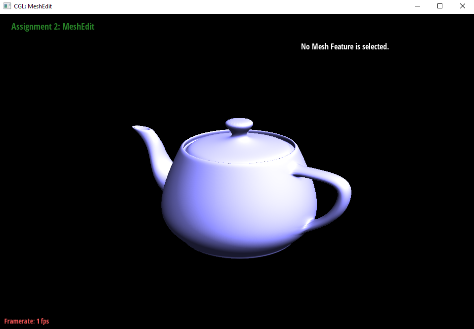
|
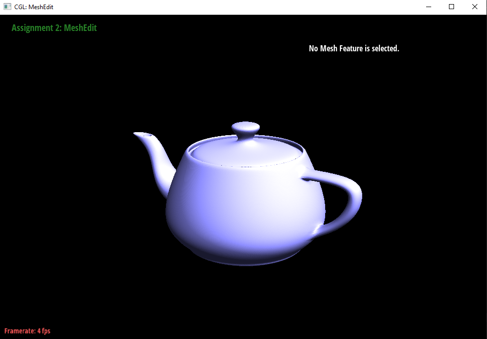
|
This is an interesting alternate subdivision mode. The basis for this mode of upsampling is as follows: first, we will precalculate (as in loop
subdivision) the newPosition parameter of all the starter vertices. Iterating through the vertices, triadic subdivision tells us that
the weight of old vertices should be equal to (1 - alpha) * v->position + alpha * avgNeighbourPosition; alpha is equal to (4 - 2 * cos(2pi / deg(v)) / 9).
Having done this, the next step is to place a new vertex at the centroid of each face of the starter mesh. All that’s left to do is to add new
edges connecting the centroids to the vertices of the triangles in which they are rooted, and reset halfedges, edges, vertices, and faces as in
tasks 4 and 5. Finally, for all the vertices for which we previously computed a newPosition field, we push the newPosition
to the position field and we’re done!